문서번호 : SCR-2026-001
발 급 일 : 2026. 07.
발 급 일 : 2026. 07.
2026년 출판콘텐츠 기술개발 지원 사업 · 자유과제 · 제출서류 ③ 기술수준 증빙 (첨부 ⑤)
시작품 화면 캡처 모음
AI+RPA 기반 웹소설·웹툰 멀티플랫폼 매출·작가 인세 정산 자동화 시스템 개발
배포 운영 중인 실험실 시작품(정산 표준화·매칭·정산 웹 애플리케이션)의 실제 운영 화면. 유통 플랫폼 31개 · 431,296행 실데이터를 처리하며, 아래 화면은 시험 운영 상태를 캡처한 것임. (TRL 5단계 SW 증빙 — 시험 운영 화면)
Ⅰ. 정산 집계·조회
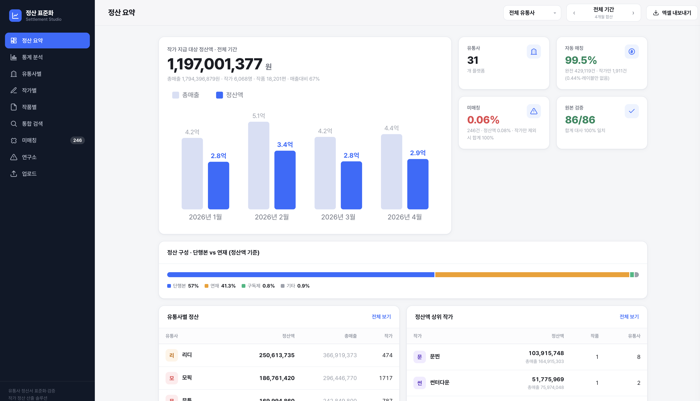
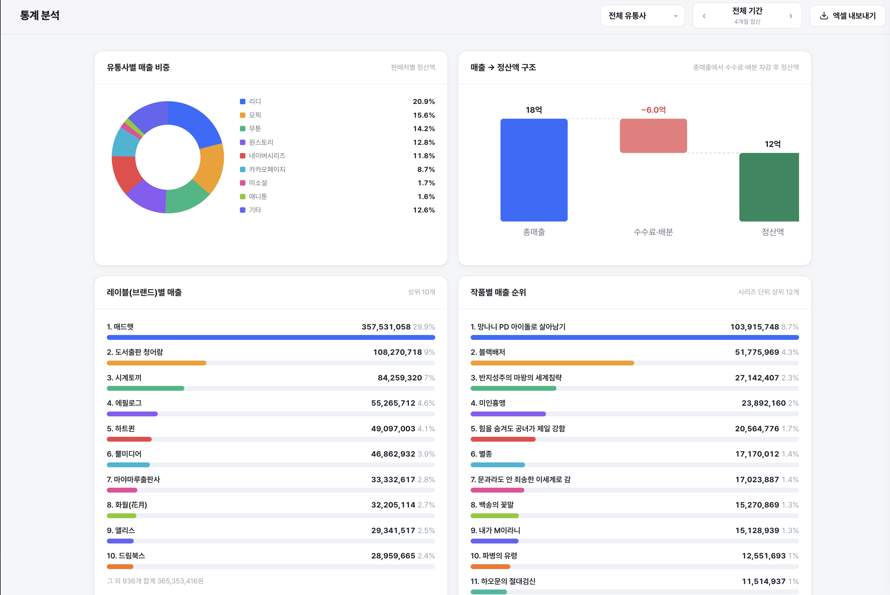
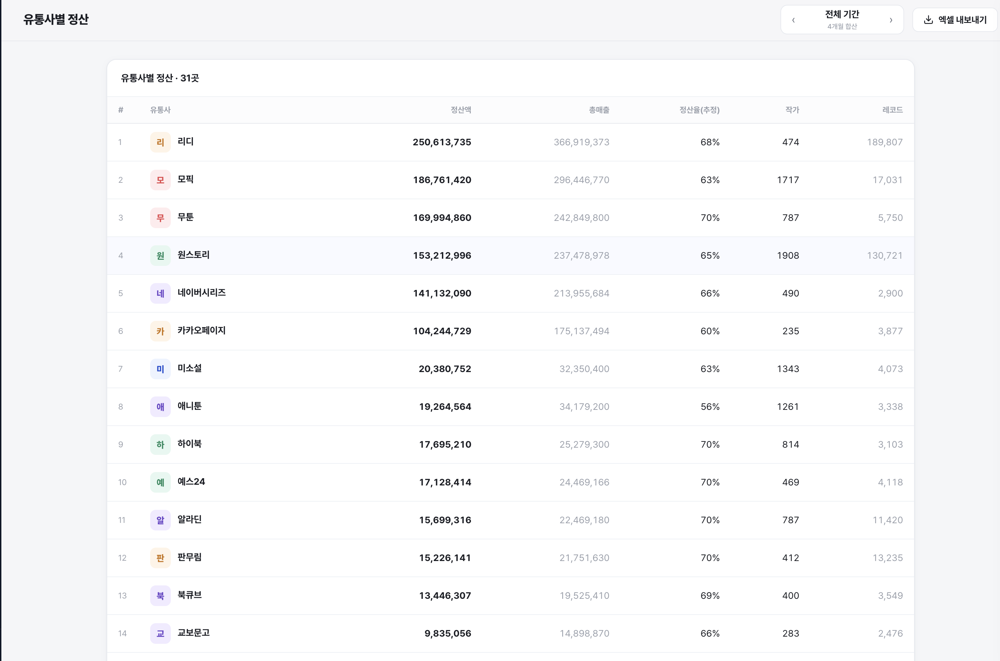
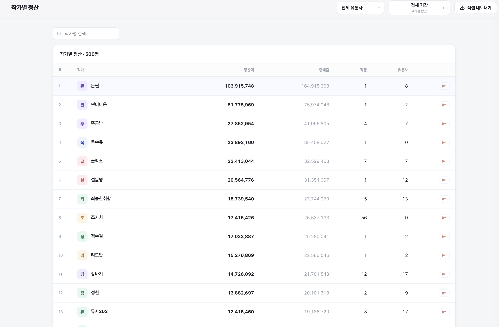
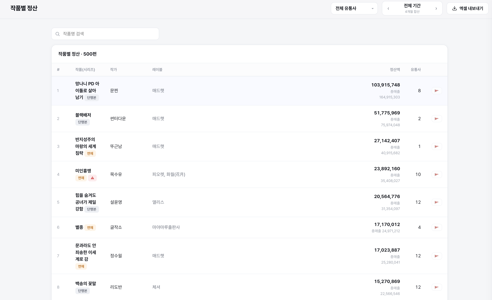
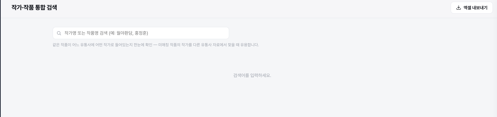
Ⅱ. 미매칭 처리
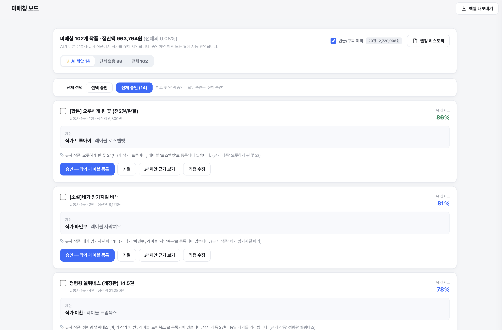


Ⅲ. 매칭 오류 연구소 (자동 탐지 8종)
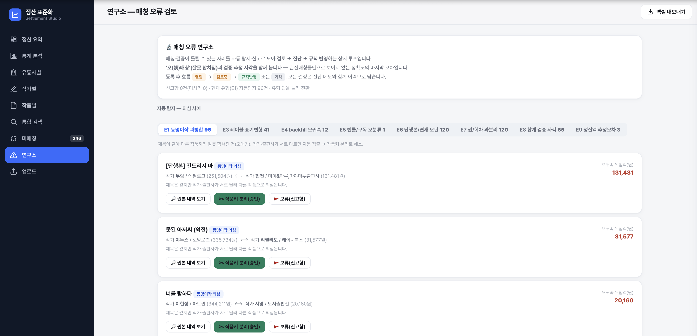
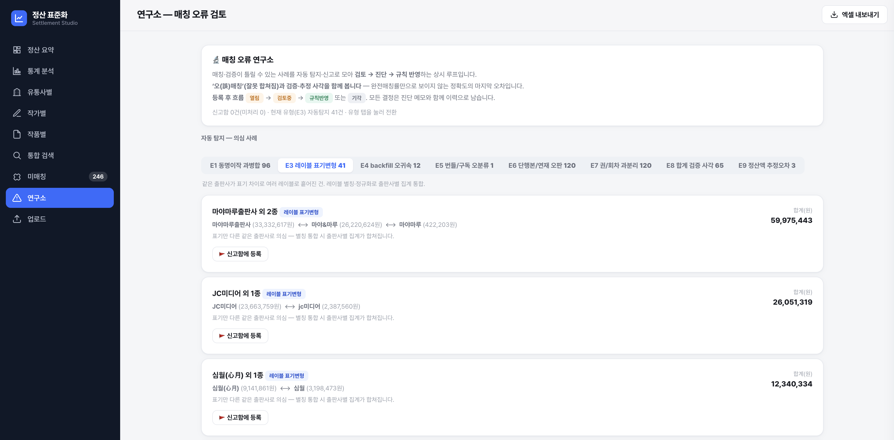
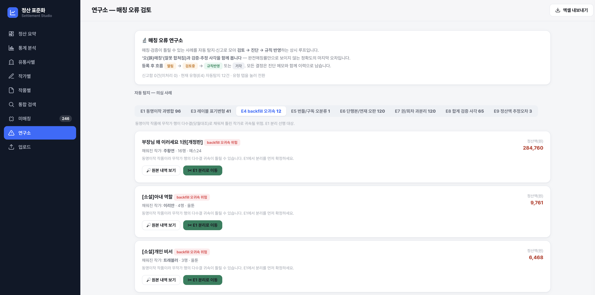
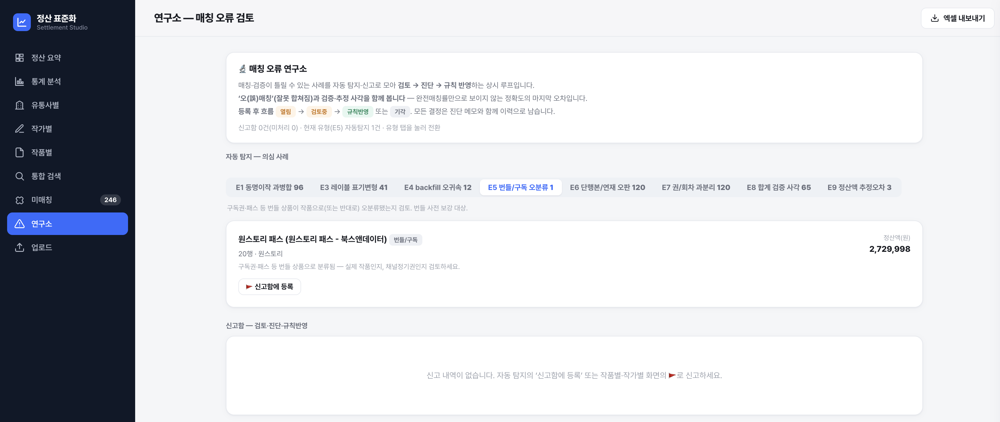
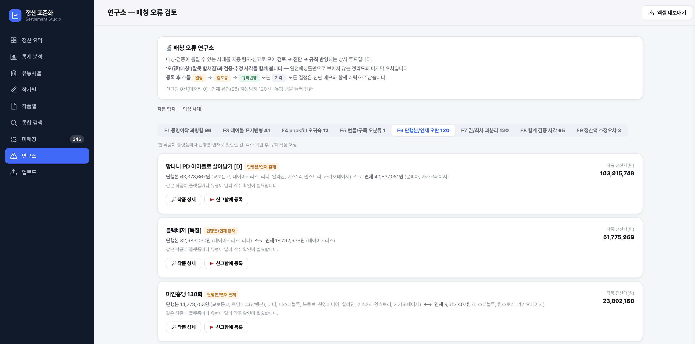
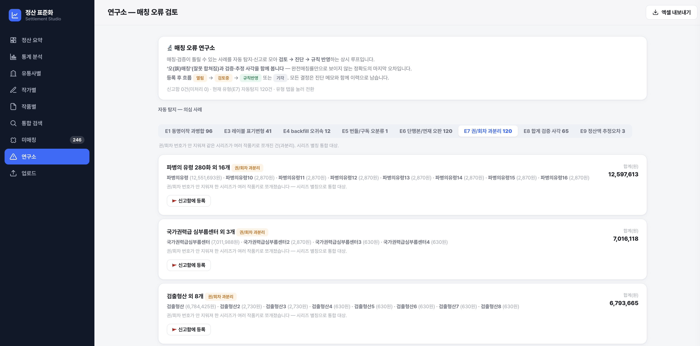
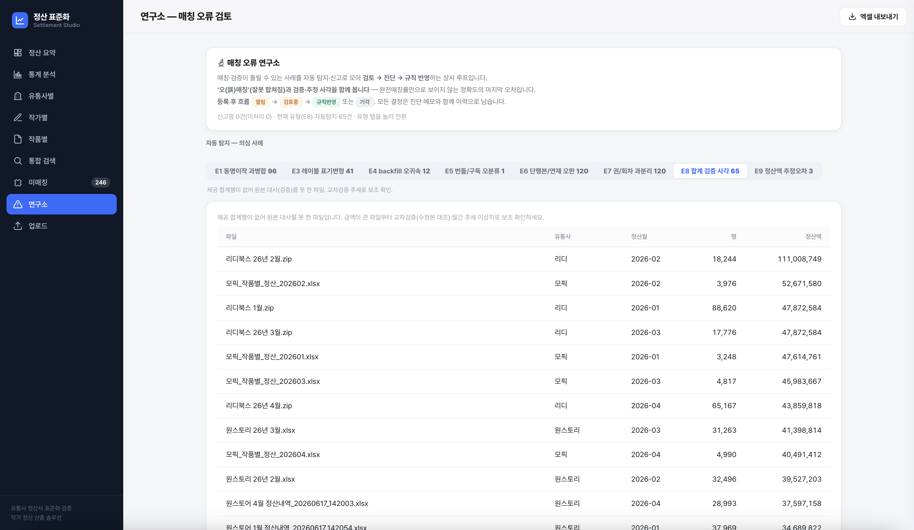
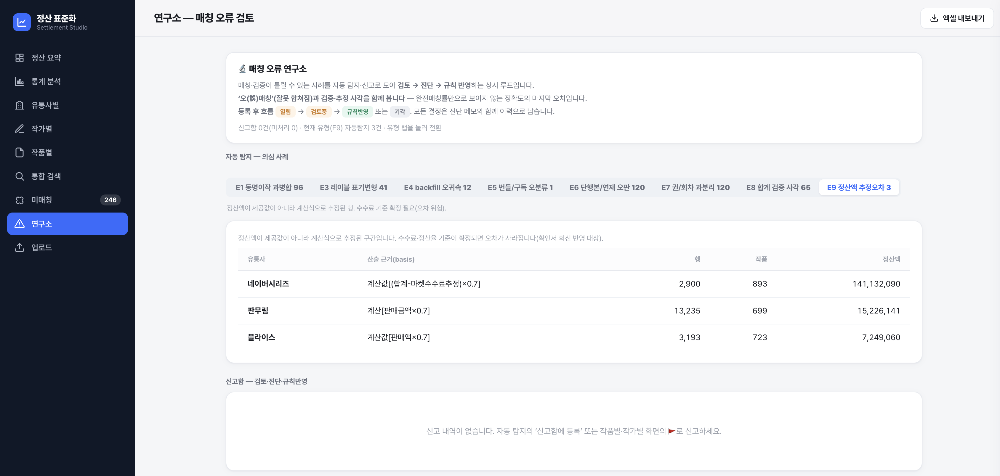
Ⅳ. 정산서 수집·표준화

본 화면은 배포 시작품의 시험 운영 상태를 캡처한 것으로, TRL 5단계(시작품 제작 및 성능평가 완료)의 소프트웨어 시험 운영 증빙임. 표시된 데이터는 2026년 1~4월 실제 정산 데이터임.